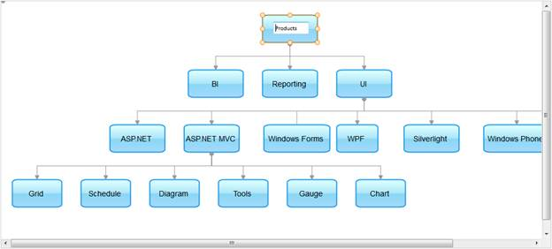

1. Create a model in the application (Refer to Getting Started > Examining the MVC Project > Adding a Model to the Application).
2. Create a DiagramPropertiesModel in the Index method. Bind the data source using the DataSource property and define the mapper for SaveMapper. Pass the model from the controller to the view using the ViewData class as shown in the following code.
|
Controller
public ActionResult Index() { context = SqlCE; DiagramPropertiesModel model = new DiagramPropertiesModel() { DataSource = context.Products, BindTo = new DiagramFields() { NodeId = "ProductCode", ParentNodeId = "Parent", NodeText = "ProductName", NodeShape = "Shape", Width = "Width", Height = "Height", BackgroundColor = "BgColor", LineWidth = "LineWidth", LineText = "LineLabel" }, DiagramMode = DiagramMode.SVG, HorizontalSpacing = 35, LayoutType = LayoutType.HierarchicalTreeLayout, Orientation = TreeOrientation.TopBottom, Width = 1000, Height = 450, SaveMapper = "SaveDiagram" }; ViewData["CRUD"] = model; return View(); } |
3. In the view, invoke the Diagram helper with the control ID as the same as the view data key.
|
[ASPX] <%{ Html.Syncfusion().Diagram("CRUD") .Render(); }%>
[Razor] @{ Html.Syncfusion().Diagram("CRUD") .Render(); }
|
4. In the controller, define the post action to save changes as displayed below. In this example, the repository method SaveDiagram() is used to update records to the data source. In the function below, we can get the list of updated nodes through the parameter updatedNodes using the bind prefix updatedNodes. In the same way we can get the list of added and deleted nodes and lines using the bind prefixes addedNodes, deletedNodes, addedLines, updatedLines, and deletedLines respectively.
|
Controller [HttpPost] public ActionResult SaveDiagram([Bind(Prefix = "addedNodes")]IEnumerable<Node> addNodes, [Bind(Prefix = "updatedNodes")]IEnumerable<Node> updatedNodes, [Bind(Prefix = "deletedNodes")]IEnumerable<Node> deletedNodes, [Bind(Prefix = "addedLines")]IEnumerable<LineConnector> addLines, [Bind(Prefix = "updatedLines")]IEnumerable<LineConnector> updatedLines, [Bind(Prefix = "deletedLines")]IEnumerable<LineConnector> deletedLines, string RequestType) { context = SqlCE; if (addNodes != null) this.AddNodes(addNodes); if (updatedNodes != null) this.UpdateNodes(updatedNodes); if (deletedNodes != null) this.DeletedNodes(deletedNodes); return context.Products.DiagramAction(true); } |
5. To save the diagram, call the saveDiagram function on button click.
|
[Script] $("#btnSave").bind("click", function (evt) { diagram = $find("CRUD"); diagram.saveDiagram(); });
|
6. Build and run the application. Edit the diagram as displayed below.

Figure 122: Diagram with Editing
7. Click the Save button to save the changes in the data source.